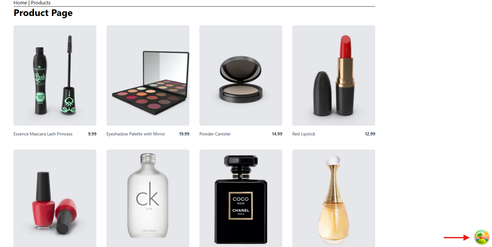
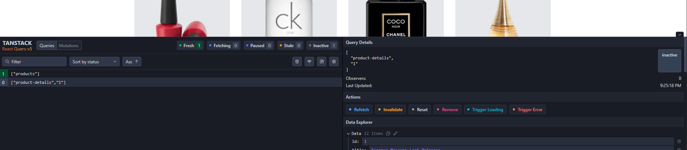
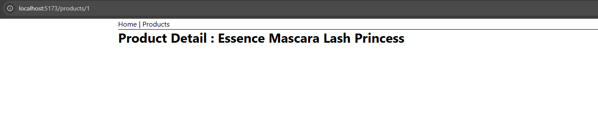

At first we create a product list using fetch and dummyjson, here we add loading and error handling. In ProductsPage.jsx
Here when we click on a product, we will navigate to product detail page. and then when we return back to product page, we will fetch the data again.
We have to manually handle:
So TanStack Query (formerly React Query) is a library that manages server data for us.
Think of it as: “Smart data-fetching + caching + state management”
npm i @tanstack/react-query
Now wrap our app with QueryClientProvider. For that, we need to create a client instance.
After that, we can use useQuery to fetch data. So we need to modify our code in ProductsPage.jsx
Here we use useQuery to fetch data, also maintaining loading and error state. So when any issue with API then it automatically show error after 3-5 times of API call.
We can also use stealeTime to set the time in queryClient to consider data stale for global use. For taht remove the staleTime from componentand update it in queryClient.
Stale queries are refetched automatically in the background when: Link
npm i @tanstack/react-query-devtools


